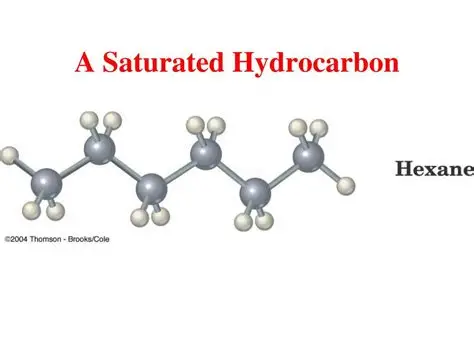
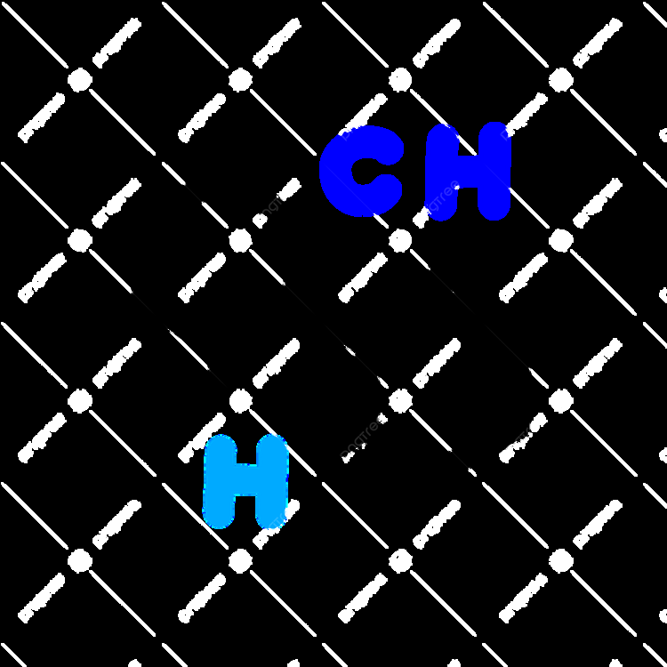
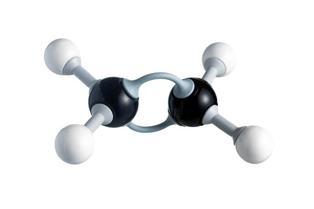

Hydrocarbon derivative
| Vietnamese | Dẫn xuất của hiđrocacbon ( ) |
|---|---|
| English | Hydrocarbon derivative |
| Pronunciation | /ˌhaɪ.drəʊˌkɑː.bən dɪˈrɪv.ə.tɪv/ |
| Word type | noun (as labelled in the PDFs) |
Topic 1 — Meaning (Vietnamese)
Dẫn xuất của hiđrocacbon là hợp chất hữu cơ được tạo thành khi một hay nhiều nguyên tử hiđro trong phân tử hiđrocacbon được thay thế bằng nguyên tử hoặc nhóm nguyên tử khác.
Meaning (English)
an organic compound formed when one or more hydrogen atoms in a hydrocarbon are replaced by other atoms or groups of atoms. (Dẫn xuất của hiđrocacbon là hợp chất hữu cơ được tạo thành khi một hay nhiều nguyên tử hiđro trong phân tử hiđrocacbon được thay thế bằng nguyên tử hoặc nhóm nguyên tử khác.)
Example
Ethanol is a hydrocarbon derivative (Ethanol là một dẫn xuất của hiđrocacbon)
Topic 4 — Meaning (Vietnamese)
Dẫn xuất của hiđrocacbon là hợp chất hữu cơ được tạo thành khi một hay nhiều nguyên tử hiđro trong phân tử hiđrocacbon được thay thế bằng nguyên tử hoặc nhóm nguyên tử khác
Meaning (English)
an organic compound formed when one or more hydrogen atoms in a hydrocarbon are replaced by other atoms or groups of atoms (Dẫn xuất của hiđrocacbon là hợp chất hữu cơ được tạo thành khi một hay nhiều nguyên tử hiđro trong phân tử hiđrocacbon được thay thế bằng nguyên tử hoặc nhóm nguyên tử khác).
Example
Ethanol is a hydrocarbon derivative (Ethanol là một dẫn xuất của hiđrocacbon).
Images from the PDFs




